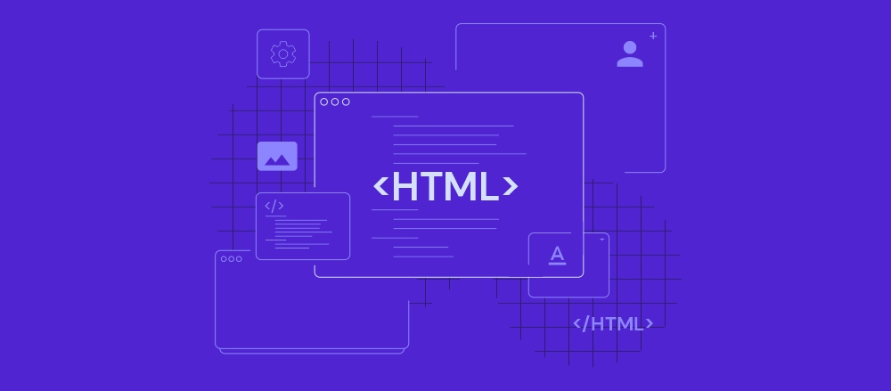
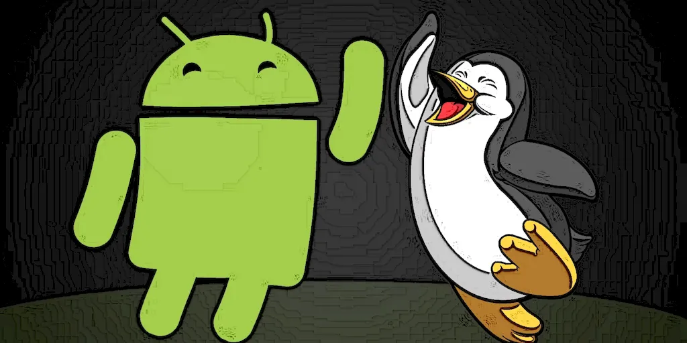

1991 — O Linux e a World Wide Web abrem a era da internet moderna
No mesmo ano, dois acontecimentos separados, em países diferentes, mudaram profundamente o rumo da computação. Na Finlândia, o estudante Linus Torvalds começou, como projeto pessoal,
o desenvolvimento do núcleo do Linux: um sistema operacional gratuito e de código aberto. Ao mesmo tempo, o físico britânico Tim Berners-Lee,
no laboratório CERN, colocava no ar a primeira página da World Wide Web, criando a estrutura de links que tornaria a internet navegável para o público comum.

Mudanças com o surgimento do Linux e da Web
O Linux trouxe uma ideia até então incomum no mundo comercial: qualquer pessoa podia ver como o sistema funcionava por dentro, usá-lo livremente e até modificá-lo e redistribuir suas
próprias versões. Já a Web de Berners-Lee resolveu um problema prático de outra natureza: como organizar e conectar documentos espalhados por computadores diferentes no mundo inteiro,
usando links simples que qualquer pessoa podia clicar, sem precisar entender comandos complicados por trás.
O impacto dos dois projetos, décadas depois, é gigantesco: o Linux hoje roda por trás da maior parte dos servidores que sustentam a internet no mundo inteiro, além de bilhões de celulares
com sistema Android, que é construído sobre seu núcleo.
WEB E POSSIBILIDADES
A web criada por Berners-Lee virou a espinha dorsal de praticamente tudo que fazemos online hoje — incluindo, de forma bem literal, o próprio site que está sendo construído neste
projeto, escrito na mesma linguagem HTML que nasceu junto com a Web em 1991.

